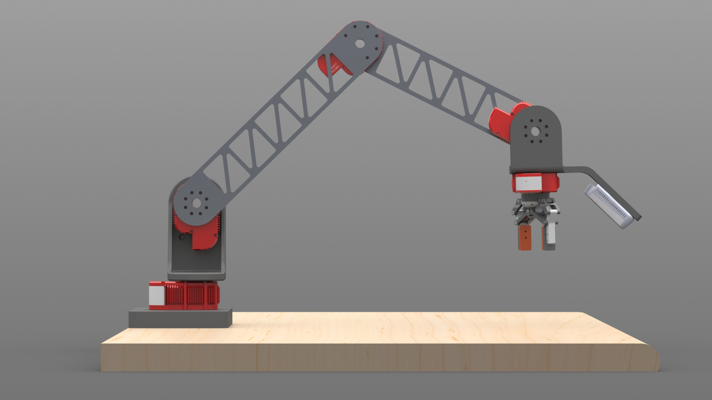
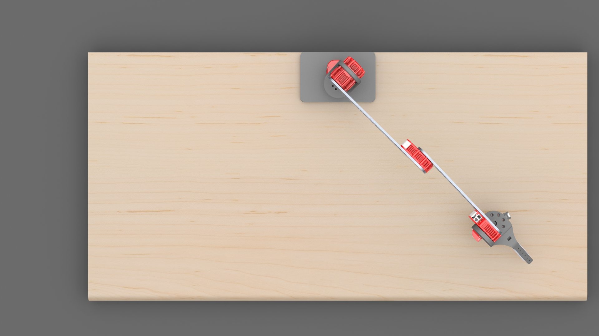
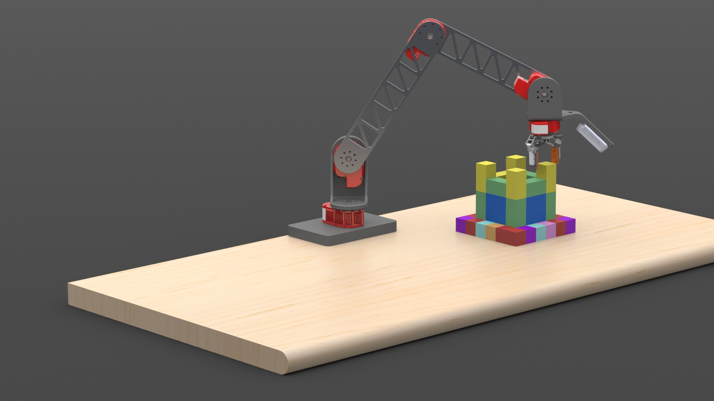
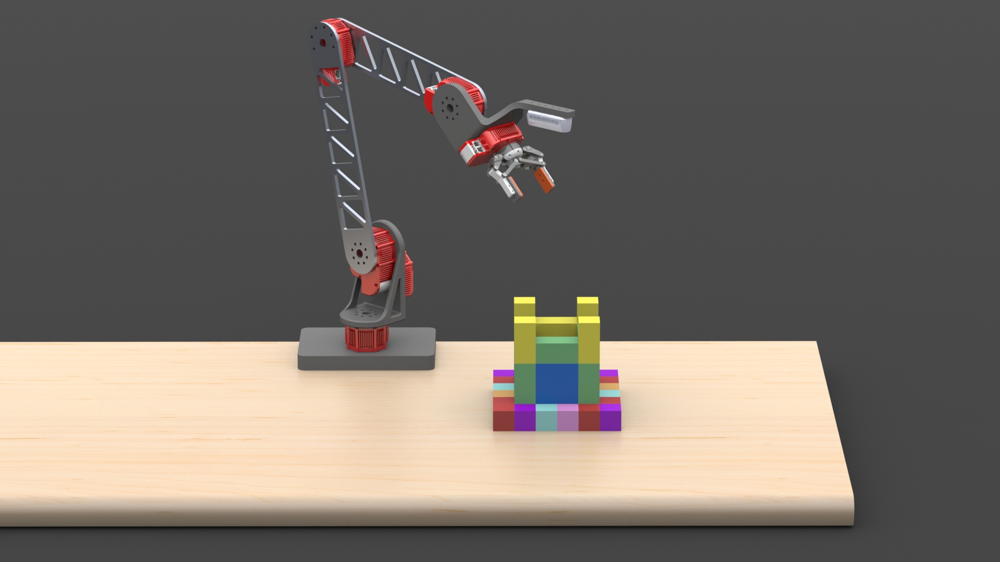

Overview
The robot picks magnetic blocks from a disordered pile and places them one-by-one into a user-specified 3D structure. At every cycle it scans the current build state, selects the next unfilled cell, and executes a full grasp–check–place pipeline — recovering automatically from grip failures, misplacements, and fused block clusters. A web dashboard provides real-time visibility into build progress, node health, and sensor state.
An AI structure design agent powered by Gemini 2.5 Flash lets users describe structures in natural language and receive a validated JSON assembly file ready for the robot to execute.
Demo Video
General Workflow
flower"
plan JSON
for block
block
block

Hardware
Arm & Actuators
The manipulator is a 5-DOF arm driven by 6 HEBI motors, with skeletonized aluminum links (14″ shoulder-to-elbow, 12″ elbow-to-wrist) to minimize mass and inertia. The five degrees of freedom — three Cartesian axes plus wrist tilt and roll — were chosen as the minimum set needed for the task: tilt enables the magnetic separation maneuver and roll aligns the fingers with a block’s edges at any orientation.
| Joint | Motor | Peak (N·m) | Continuous (N·m) | Max Load (N·m) |
|---|---|---|---|---|
| Base | X8-9 | 20.0 | 8.0 | — |
| Shoulder | X8-9 | 20.0 | 8.0 | 7.36 |
| Elbow | X5-4 | 7.0 | 4.0 | 2.38 |
| Wrist Tilt | X5-1 | 2.5 | 1.3 | 0.1 |
| Wrist Roll | X5-1 | 2.5 | 1.3 | — |
| Gripper | X5-1 | 2.5 | 1.3 | 0.1 |


Cameras
The system uses two cameras. A Logitech webcam is mounted in a fixed elevated position for a top-down workspace view — used for pile detection and multi-block connection checks. An Intel RealSense D435i depth camera is mounted at the wrist above the gripper, oriented vertically — used for structure state reconstruction via point clouds and for Z calibration.
ROS 2 Software Architecture
The software is structured as four cooperating ROS 2 nodes communicating exclusively
via publish-subscribe topics. Every node participates in a mutual heartbeat protocol —
each publishes a boolean on its own <node>/heartbeat topic at a fixed rate and monitors
peer heartbeats to detect node failures.
The Brain uses speculative IK precomputation — while the arm is executing the current trajectory, it issues a precompute request for the expected next trajectory. A primary request (needed immediately) preempts any in-progress precompute thread, minimizing idle wait time.
Build Pipeline & Behaviors
The system repeats a perception–plan–act cycle, selecting and placing one block per iteration. Each iteration selects the next unfilled cell on the lowest incomplete layer closest to the structure center — building outward and upward to avoid placing blocks between or below others.




Perception System
Camera Calibration
ArUco markers at the four corners of the workspace provide an affine pixel-to-world transform for the overhead camera, refreshed every 100 seconds in case the table shifts. XY and Z calibration procedures (described in the Kinematics section) run automatically at startup and write offset CSV files that the IK Solver reloads on demand. A separate placement grid calibration re-detects the 6×6 base grid corners through the same camera pipeline, ensuring that kinematics error correction and grid registration share the same coordinate frame.
Pile Block Detection
Blocks in the disorganized pile are detected by the overhead Logitech camera using a custom pipeline:
- HSV segmentation — per-color HSV bounds filter the image to isolate each block color.
- Edge-aligned bounding box — OpenCV contours are rotated to align with the longest detected edge, an axis-aligned bounding box is computed, then rotated back — giving a tight, rotation-aware bounding rectangle.
- Rectangle splitting algorithm — large rectangles (≥2 block lengths) are subdivided into a grid of block-sized cells. Each cell is tested for occupancy and adjacency, producing a map of which block faces are magnetically connected.
Structure Reconstruction — Bayesian Voxel Occupancy Map
The 3D structure state is maintained in a sparse Bayesian voxel grid keyed by integer (ix, iy, iz) tuples. Each voxel stores log-odds occupancy, observation count, last-seen scan index, and RGB color. Every scan from the wrist RealSense runs four sequential update passes:
After integrating scans, the system queries the map layer-by-layer (one layer per block height), detects blocks in each layer using the same contour algorithm as pile detection, and matches them to target grid cells. Blocks hidden beneath visible layers are assumed correctly placed (conservative occlusion assumption). The result is the current build state used to select the next block to place.
Temporal Buffering with DBSCAN
To prevent acting on momentarily-visible or still-moving blocks, the Brain maintains a pile detection buffer over a rolling ~2-second window. DBSCAN clusters detections spatially (chosen because it requires no cluster count and designates sparse detections as outliers automatically). A block is published as stable only if its cluster position variance is under 2 cm and it has been consistently detected for the full buffer duration — preventing premature grasps.
AI Structure Design Agent
To make the system accessible, we built a conversational AI agent using the Google Agent Development Kit (ADK) powered by Gemini 2.5 Flash. Users describe a desired structure in natural language (e.g., “build a flower” or “make a 3-layer pyramid”) and the agent iteratively generates, validates, and refines the JSON assembly file.
The agent has access to seven tools: assembly constraint lookup, block inventory count, list/load saved assemblies, JSON validation (checking 8 rules including grid bounds, cantilever limits, and reachability), ASCII layer-by-layer visualization, and disk save.
The generated JSON format specifies each block by color and (x, y, z) grid position:
Shortcomings & Lessons Learned
The system is highly robust but has five primary limitations, each with a mitigation strategy:
- N×M block clusters (N,M > 2) — the arm cannot separate large fused clusters because it cannot grasp any block within them. Mitigation: unreachable clusters are detected and ignored; the arm signals for human help via the nod gesture.
- Rare structure bumps — the arm may contact the structure in unusual configurations. Mitigation: build order is outward and upward, maximizing clearance; collision detection triggers immediate stop and recovery.
- Motor connection drops — brief HEBI disconnects cause sudden positional jerks. Mitigation: jerk prevention suppresses erroneous commands and inserts smooth recovery waypoints; a “catching” behavior restarts the trajectory from the true joint state rather than forcing a catch-up jump.
- Edge-case misplaced blocks — some block positions (inside N×N connections or at workspace boundaries) cannot be grasped. Mitigation: reachability analysis marks these as inaccessible and the nod gesture requests human intervention.
- No online learning — the system cannot adapt kinematics or detection errors discovered during a run without a recalibration. Mitigation: the online calibration phase at startup produces error maps that significantly reduce systematic errors. Fully learned policies via RL were considered but deemed higher risk for the 7-week timeline.